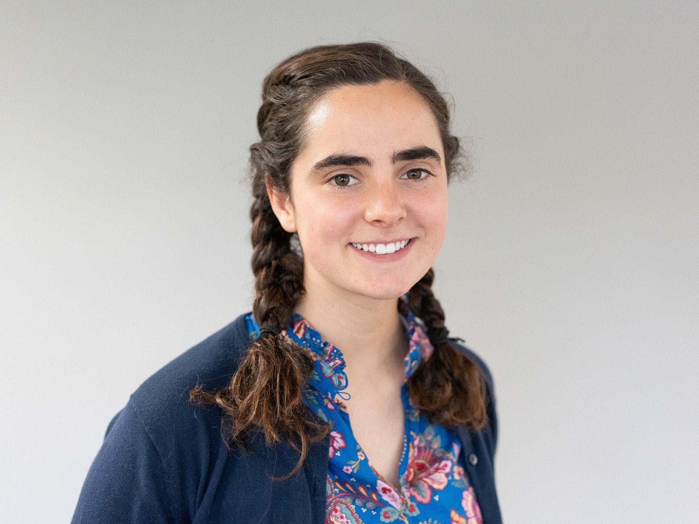

I am a journalism and data science double major in my sophomore year at Northwestern University, in the Medill School of Journalism. I strive to combine my data science skills with people-centric reporting to hold those in power accountable and tell important stories. I get excited about investigative and watchdog journalism driven by data.
Headshot: Anna Hoch-Kenney